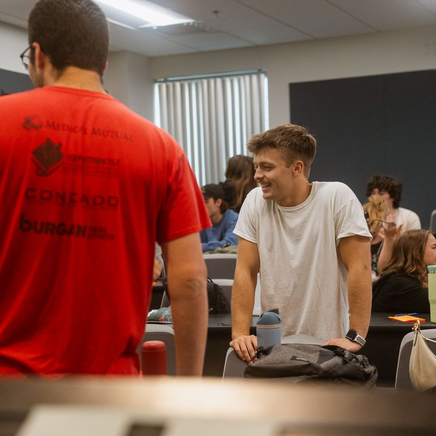

The Band
Tap in 🎸
You found this because you tapped the tag. Everything about TBT — meeting times, sign-ups, events — lives right here, one tap away. Just met someone who wants to know more, join a Bible study, or find their people on campus? Hand them your wrist and let them tap in too.
30 seconds, right now
Join TBT — or update your info
New around here? Get on our list. Already in? Keep your contact info current so you don't miss anything.
Join TBT / Update Your Info →We'll only use your info to reach out about TBT — we never share it with third parties.
What We Believe
Sundays, 10:55am
Old North Church
Mondays, 3:55pm
Williamson Building, Room 2212
This Week at TBT
What's Coming Up
More to Explore
Something to Watch
Watch it →
Something to Read
Read it →
Something to Pray About
Learn more at Joshua Project →
Something to Learn About
Something to Remember
Keep Connected

Text Our Team
→
Home Groups
→
Bible Quads
→
What is the Gospel?
→
Old North Church
→
Get some TBT Merch!
→
Signing up for a Quad or Home Group? We'll only use your info to reach out about TBT — we never share it with third parties.